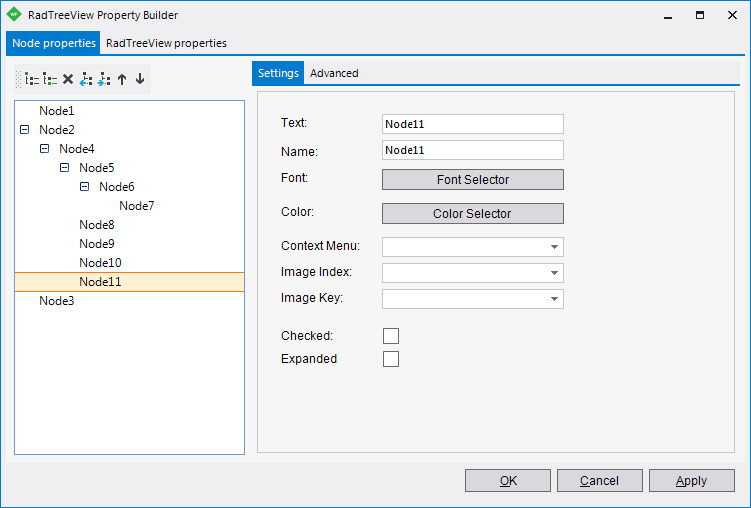

Property Builder
To quickly create and arrange node structure and appearance invoke the
RadTreeView Property Builder from the context menu or the
Smart Tag.

Node Commands: The left panel of the dialog contains a button bar with commands to add, delete and arrange nodes. In order from left to right:
Add a new root node.
Add a child node.
Delete the selected node.
Make the selected child node a sibling of its parent.
Make the selected node a child of the previous node in the list.
Move the selected node up in the list.
Move the selected node down in the list.
Preview: This area shows how the RadTreeView will look and act at run time. This includes styled behaviors such as mouse over effects.
Structure tab: The Structure tab on the right side of the dialog allows you to quickly edit significant properties. The properties correspond to the currently selected node or RadTreeView in the Preview area.
The basic properties for RadTreeView are:
__Item Height__in pixels.
__Tree Indentation__in pixels
__Context Menu__can be associated with the RadTreeView as a whole.
Any RadDropDownMenu components on the form will be displayed in the drop down list for selection.TreeView Features lets you allow Drag & Drop,
Load on Demand, Checkboxes, TriState Checkboxes and Label Editing.Save tree to XML allows you to save the already configured tree into an XML file.
Load tree from XML allows you to load tree nodes from an XML file.

The basic properties for each of the selected nodes in the preview are:
Text for the node.
Font that the node will be displayed in.
Use the Select Font button to set the font, font style, size, font effects and font script.__Context Menu__can be associated with each node in the RadTreeView.
Any RadDropDownMenu controls on the form will be displayed in the drop down list for selection.Image Index__or __Image Key are used to select images from a
standard Windows forms ImageList component. To use these properties add a ImageList component from the "All Windows Forms" area of the
Toolbox and add to the Images collection.
Appearance tab: This tab lets you set the visual style of the RadTreeView as a whole. The tab lets you choose the Theme. You can select the Show Lines checkbox to display the lines that connect the nodes and set the line style and color.
Expert Mode / Basic Mode: Expert mode displays all the properties of the RadTreeView or nodes as you would see them in the Properties window. The Expert mode provides the best control over the RadTreeView characteristics but it may take longer to find the relevant properties.